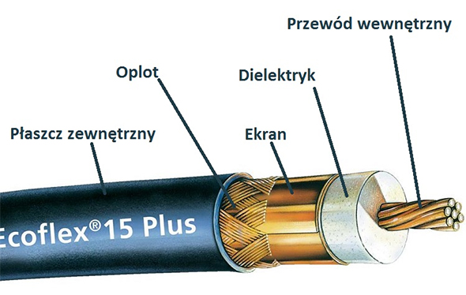
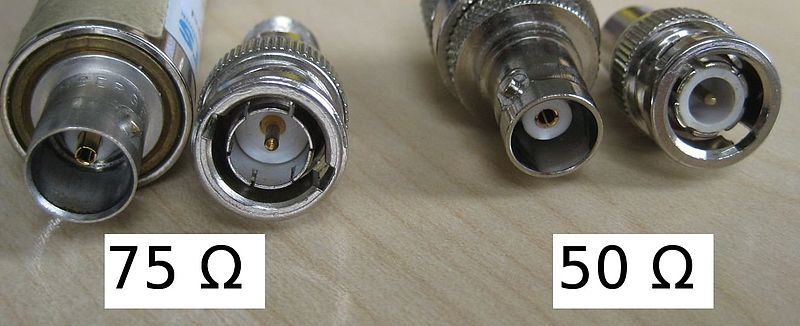
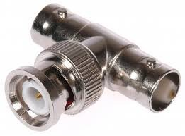
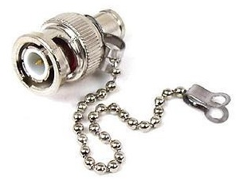

LOKALNE SIECI KOMPUTEROWE / Pasywne elementy składowe sieci
Media transmisyjne - Kabel typu koncentryk
 Budowa przewodu typu koncentryk:Przewód wewnętrzny - bardzo ważnym czynnikiem wpływającym na jakość przesyłu sygnału jest materiał, z którego jest wykonany. ( Tylko miedź gwarantuje ograniczenie oporu elektrycznego i zapewnia najlepszą wydajność. )
Dielektryk ( izolacja ) - warstwa tworzywa sztucznego najczęściej wykonana z poliizobutylenu (PIB).
Ekran ( Materiał wykonania ekranu ). Zwykle jest to połączenie miedzi z poliestrem lub połączenie aluminium z poliestrem.
Oplot - najczęściej miedziana lub aluminiowa siatka. Im większa gęstość oplotu, tym wyższa jakość kabla.
Płaszcz zewnętrzny - wykonany z warstwy tworzywa sztucznego chroniącego przewód przed wilgocią. Można znaleźć na nim oznaczenia producenta.
| Rodzaj | Grubość | Maksymalna długość | Standard sieci |
| Cienki | 5mm | 185m | 10base-2 |
| Gruby | 10mm | 500m | 10base-5 |
| Zalety | Wady |
| Obsługa komunikacji w pasmach o dużej szerokości bez potrzeby instalowania wzmacniaków | Nawet delikatne zgiecie może spowodować uszkodzenie |
| Niska podatność na zakłucenia | Cena wyższa od kabla typu skrętka |
| Wieksza odległość miedzy stacjami w porównaniu do kabla typu skrętka | Maksymalna Przepustowość ograniczona do 10Mb/s |
Aktualnie stosowane przy budowie instalacji satelitarnych, telewizji kablowej, połączenia audio-wideo.
Wcześniej stosowany w budowie sieci komputerowych.
Złącza kabla koncentrycznego:
 Powyżej przedstawiono wejście / wyjście złącza BNC w wersjach 75 omów ( Ω Ohm ) i 50 omów ( Ω Ohm ).
Ten pierwszy jest stosowany w transwerze obrazu a drugi danych informacyjnych.
 Powyżej jest przedstawiony trójnik BNC ( 50 Ω ). Jego zastosowaniem jest połączenie trzech kabli typu koncentryk.
 Powyżej jest przedstawiony terminator BNC( 50 Ω ). Jego zastosowaniem jest tłumienie sygnału przesyłanego przez kable koncentryczne.
Zapobiega też odbiciom sygnału elektrycznego, dzieki czemu sieć nie zostaje obciożona zagubionymi pakietami danych.